The goal of this project is to work in a group of 4 to create an interactive interface
for a startup that is just getting started. Our group went through the full process of
mocking up a solution to the startup's concept. We looked for startups on
YCombinator which is an American technology startup accelerator launched in March 2005.
Vizzly is the startup we've selected!
"Vizzly is an embeddable analytics tool which companies can plug into their customer-facing apps.
Instead of delivering a predefined dashboard to users, companies can offer a flexible dashboard builder
for users to answer questions and track metrics specific to them."
Sketching and Wireframing
Among the 4 of us, we created three different sketches each for three different screens that we envisioned
the Vizzly application to contain without peeking into their actual website. They are as follows:
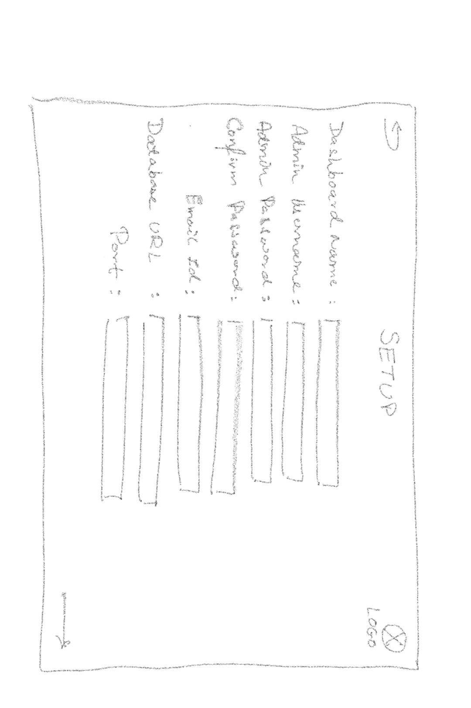
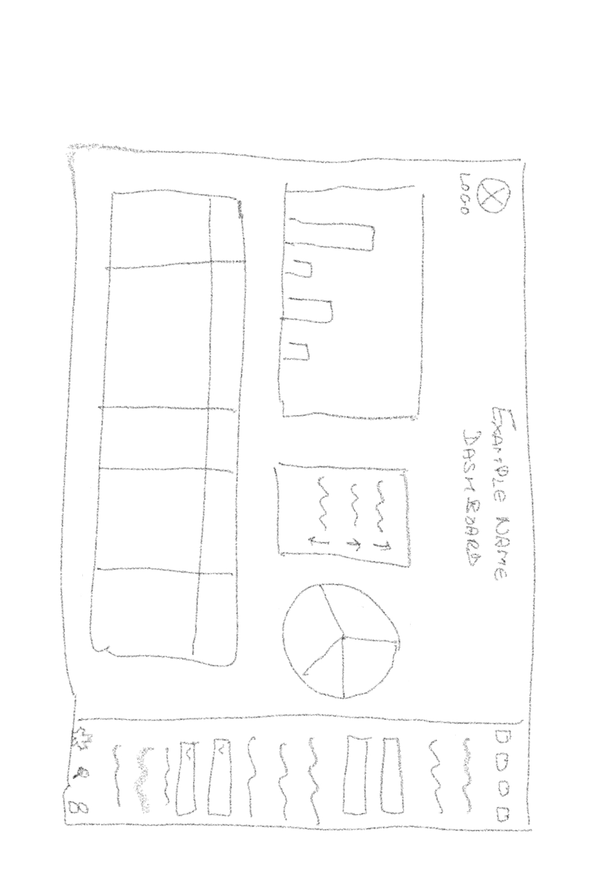
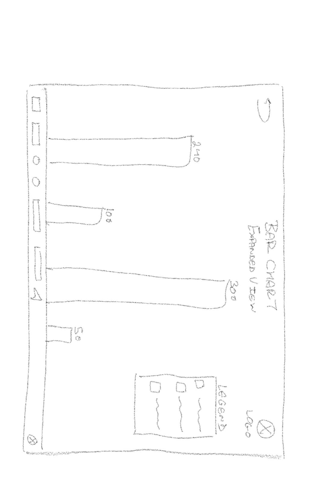
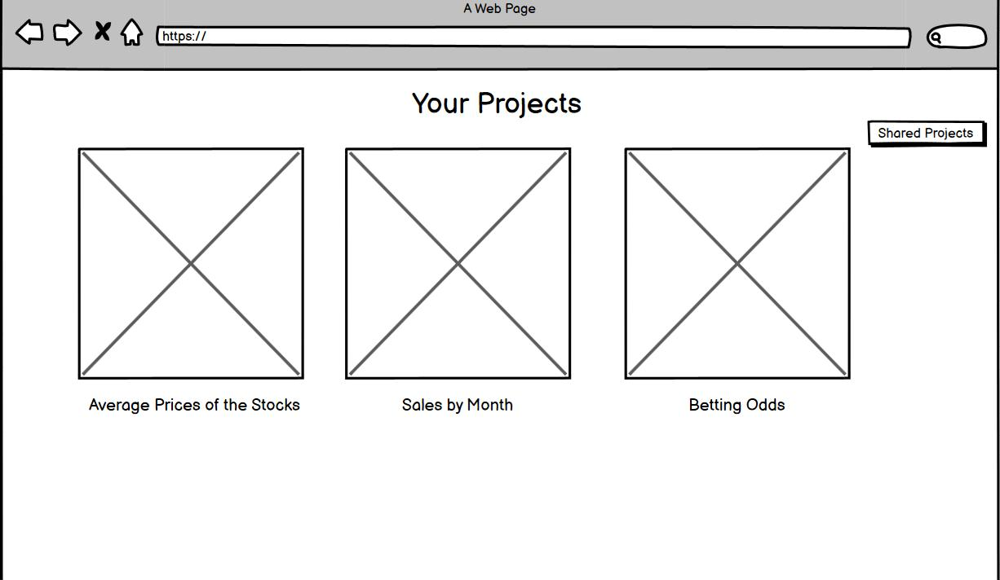
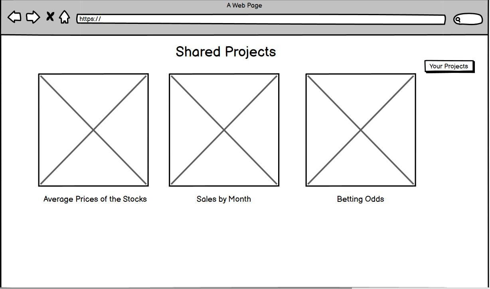
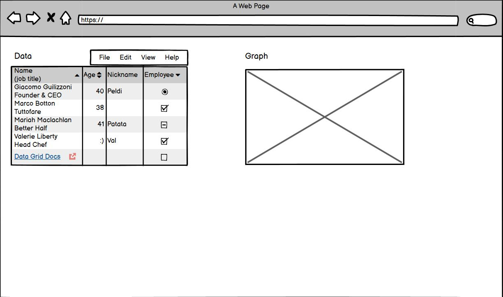
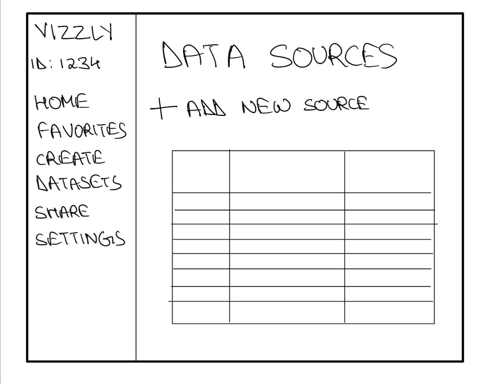
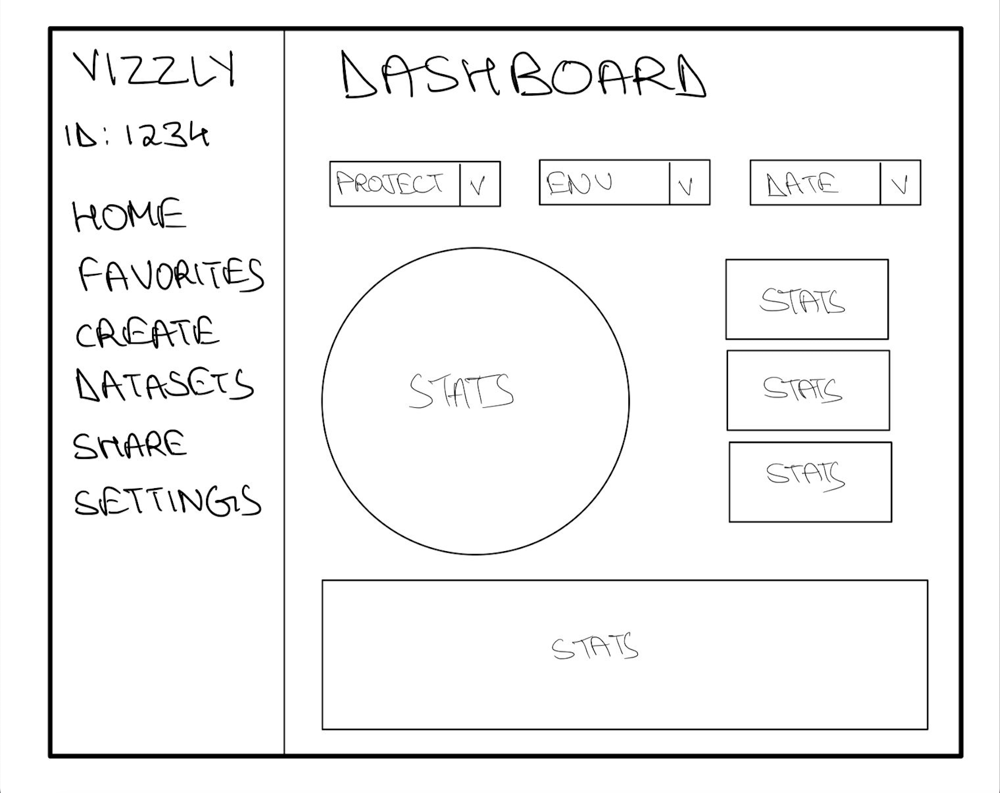
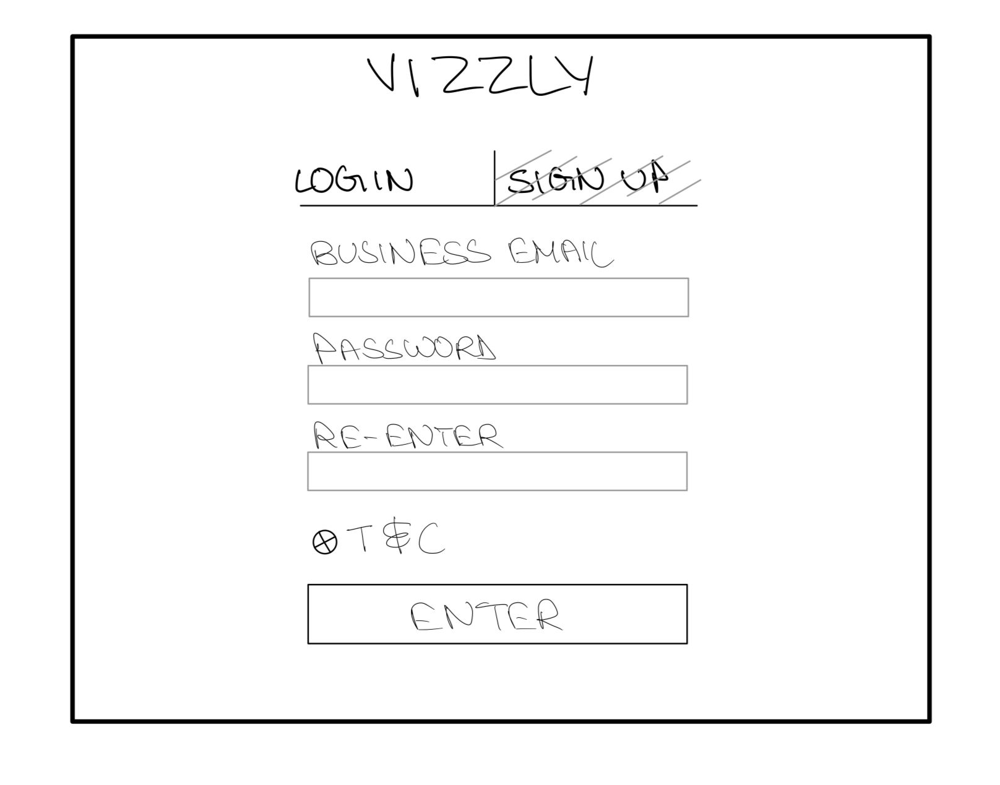
Design prototypes
We gathered as a group after finishing our separate sketches and combined all of our concepts
into a single set of wireframes. We attempted to illustrate ways to achieve the company's objectives
through these, as well as to showcase original thinking and different approaches. We first created
Low-Fidelity prototype using Balsamiq. The prototype is
as follows:
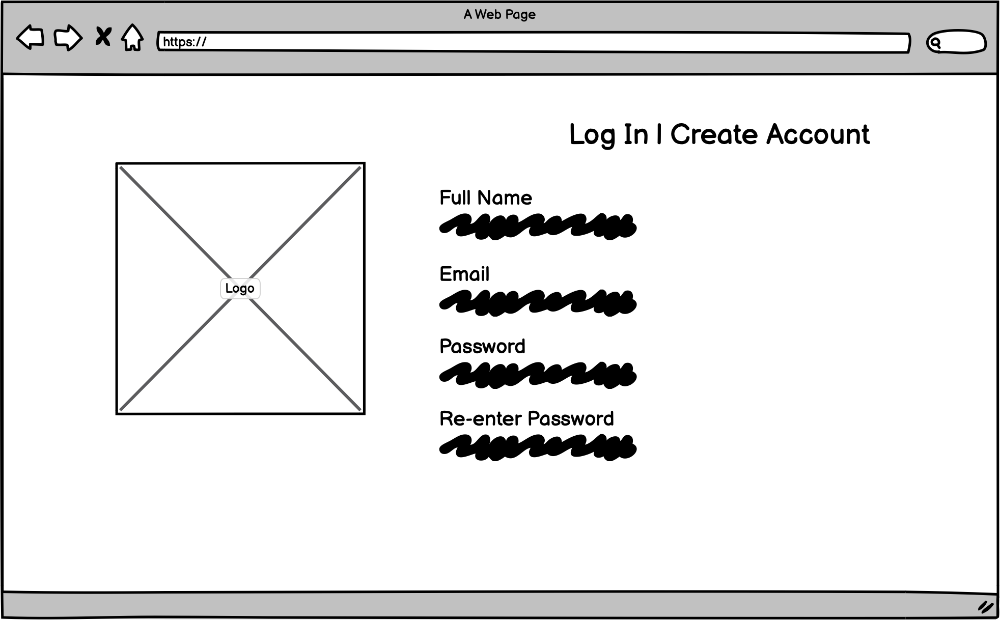
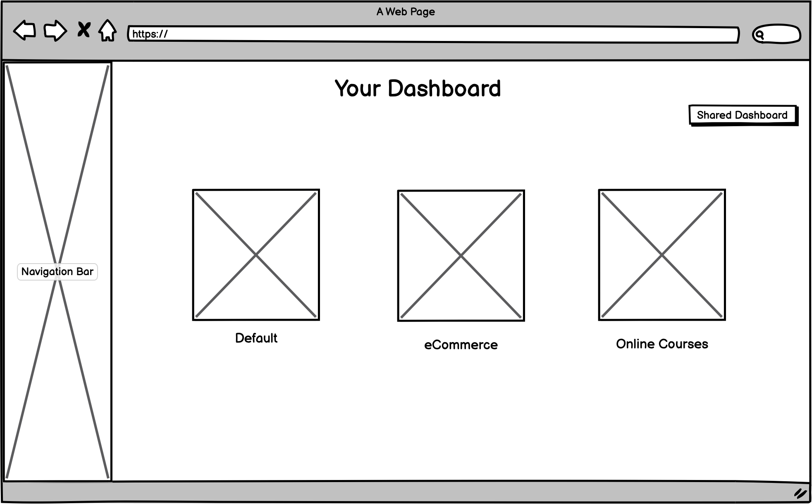
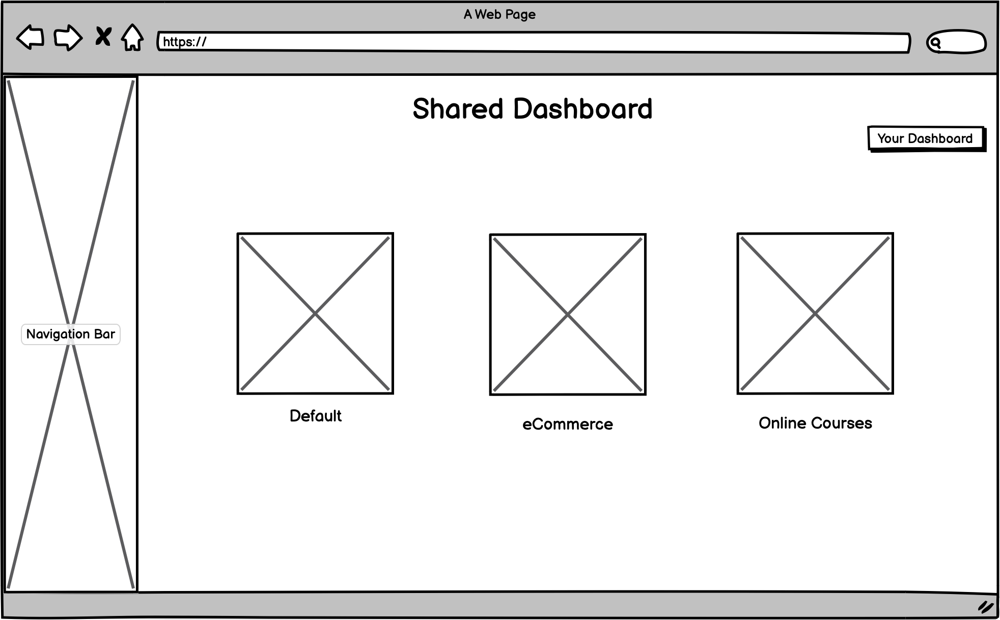
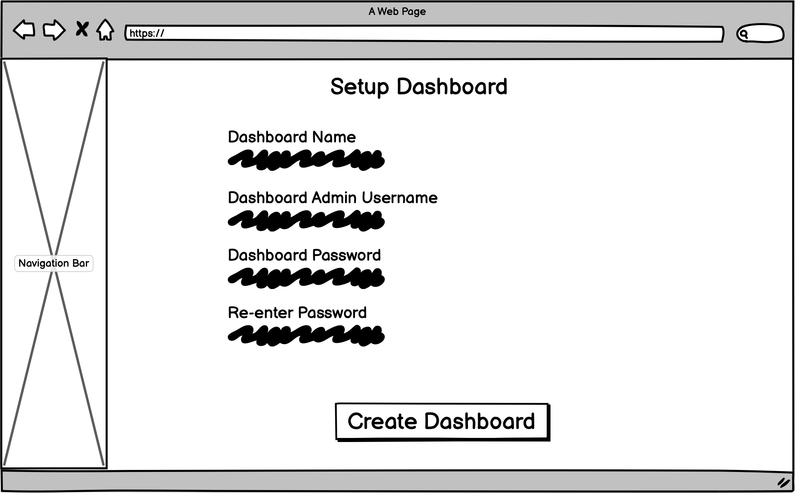
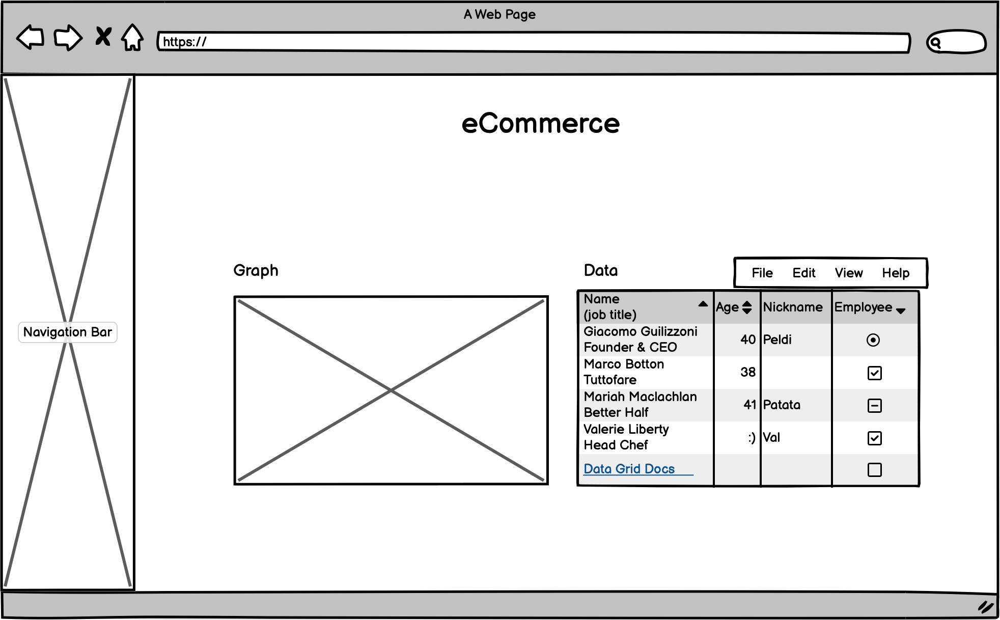
On the basis of the wireframe, we subsequently created an interactive high-fidelity (hi-fi) prototype.
We used figma to implement the same. Later we presented our mockup during a studio time of the course CS1300 at Brown
for a round of critiques.
Critiques
Some of the reviews we received during our crit studio session are as follows:
- Right now, a user might interpret the e-commerce dashboard as a shared dashboard because it's under a button that says shared dashboards
- Logo is good to return to main dashboard, but you can go so many layers deep that it might be helpful to have a local “back” button
- “Select data source” brings to a different page, which might not be expected behavior
- The side navigation bar feels great
- I was a little confused about what the “Your Dashboards” page is displaying for a minute
- If "shared dashboards" is available on the nav bar on the side, I feel like it shouldn't be on the “your dashboards” page as a rectangle
- I think the Account Details page might need a little bit more info; for example, to change the password, the user should probably enter the original password in the first place
- Consider keeping the “Create New Dashboard” and “Shared Dashboards” the same color and adding affordances to the button to better distinguish between the two
- With the navbar on the left side, the main content of your page, notably on the “Your Dashboards,” “Shared Dashboards,” “Account Details,” “eCommerce,” and “Traffic by Device” pages, is a little off center
- This might only be visible in prototype mode, but on some pages, the page header (e.g. Traffic by Device), is partially blocked off by the computer camera
User Testing
We conducting our own usability test through a remote user testing service "UserTesting.com",
using our newly created, interactive hi-fi prototype. We created a scenario for the user
for testing purpose which is as follows:
"Vizzly is an embeddable analytics tool which companies can plug into their customer-facing apps.
Imagine you are a manager at a company who wants to integrate Vizzly into their customer facing
application in order to draw out deeper insights. First, go through the available options.
Using the Vizzly portal, create a new dashboard and connect an existing data source which would
contain your applications user data. After creation, assume the dashboard you created is called
"eCommerce". Further analyze the metrics on this dashboard and play around with the charts.
Lastly, try and change your account details.
ASSUME ALL TEXT BOXES ARE PRE-FILLED FOR YOU. THIS IS NOT AN ACTUAL WEBSITE BUT AN INTERACTIVE
MOCKUP MADE ON A PROTOTYPING SOFTWARE."
Task:
- Without leaving the homepage, what are your initial impressions of the website? Explain your answer.
- Think of something that you might do on this website and describe it out loud. Now use this website to find what you just described. Move on to the next task when you're done. [Success: Yes, No]
- Do you feel confident conducting business on this website? Explain your answer.
Post Completion Questions:
- What frustrated you most about this site?
- If you had a magic wand, how would you improve this site?
- What did you like about the site?
Test Results:
Analysis of Results
All users had no difficulties creating a new dashboard. Many were able to fluently switch back and forth
between Your Dashboard and Shared Dashboard. Users' actions matched our expectations. When accessing the
“eCommerce” dashboard and analyzing the data, all users had no difficulties accessing the newly created
dashboard. Many users were satisfied with how the dashboard was organized and the different types of data
that were displayed. A minority of users complained that some of the graphs were unclear (hard to understand)
and that there should be an option to export the graphs. Users' actions matched our expectations, but some
of the complaints surprised us.
When changing account details, many users had no difficulty changing the account details. Users' actions matched
our expectations Some additional comments that were repeated included that the color scheme is unsatisfactory. The
navigation bar was resourceful. Overall functionality is very simple and accessible. Generally, many users successfully
finished all tasks and proficiently used Vizzly. There weren't any “errors” in terms of completing the tasks, but they
did raise a couple key points that could be improved on.
Some potential interface changes include:
- Export button for the graphs
- Adding a “Create New” wording next to the + sign
- Changing the colors to be more natural tone
- Easier and more visible options to sort/edit analytics